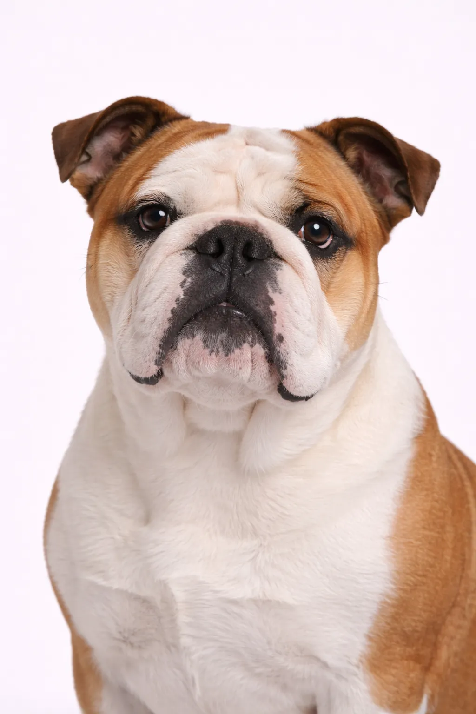

Bulldog
One of the best family dogs \u2014 docile, willful and endlessly patient with kids.
12-16 in
40-55 lbs
Breed Ratings
Temperament
Overview
The Bulldog is a thick-set, low-slung, well-muscled dog with a wrinkled face and a distinctive pushed-in nose. Despite their grumpy expression, Bulldogs are gentle and make excellent family companions.
Temperament
Bulldogs are calm, courageous, and friendly. They form strong bonds with children and are known for their patience. They can be stubborn but respond well to patient training.
Health
Prone to many health issues including breathing problems, hip dysplasia, skin infections, and overheating. Regular vet care and choosing healthy bloodlines is essential.
Exercise
Low to moderate exercise needs with short daily walks and indoor play. They adapt well to apartment living when their basic needs are met. Mental stimulation through interactive toys keeps them engaged. Gentle activities suit this breed's calm temperament.
Is This Breed Right for You?
Best For
- Apartment living
- Families with children
- Those wanting a calm dog
- Seniors
- First-time owners wanting a mellow pet
Not Ideal For
- Hot climates
- Active/athletic owners
- Budget-conscious (high vet costs)
- Those wanting a long-lived breed
Our Verdict: Bulldogs are gentle, calm companions perfect for relaxed households. Great with kids and apartment-friendly. However, expect significant health issues and vet bills. Best for those who can handle their special health needs.